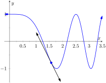
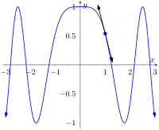

We have covered almost all of the derivative rules that deal with combinations of two (or more) functions. The operations of addition, subtraction, multiplication (including by a constant) and division led to the Sum/Difference Rule, the Constant Multiple Rule, the Power Rule with Integer Exponents, the Product Rule and the Quotient Rule. To complete the list of differentiation rules, we look at the last way two (or more) functions can be combined: the process of composition (i.e. one function “inside” another).
One example of a composition of functions is \(f(x) = \cos(x^2)\text{.}\) We currently do not know how to compute this derivative. If forced to guess, one might guess \(\fp(x) = -\sin(2x)\text{,}\) where we recognize \(-\sin(x)\) as the derivative of \(\cos(x)\) and \(2x\) as the derivative of \(x^2\text{.}\) However, this is not the case; \(\fp(x)\neq -\sin(2x)\text{.}\) One way to see this is to examine the graph of \(y=\cos\mathopen{}\left(x^2\right)\mathclose{}\) in Figure 2.5.1 and its tangent line at \(x=\pi/2\text{.}\) Clearly the slope of the tangent line there is nonzero, but \(-2\sin(2\cdot\pi/2)=0\text{.}\) So it can't be correct to say that \(y'=-\sin(2x)\text{.}\)

Figure2.5.1.A graph of \(y=\cos(x^2)\) and a tangent line at \(\pi/2\)
In Example 2.5.7 we'll see the correct way to compute the derivative of \(\sin\mathopen{}\left(x^2\right)\mathclose{}\text{,}\) which employs the new rule this section introduces, the Chain Rule.
Before we define this new rule, recall the notation for composition of functions. We write \((f \circ g)(x)\) or \(f(g(x))\text{,}\) read as “\(f\) of \(g\) of \(x\text{,}\)” to denote composing \(f\) with \(g\text{.}\) In shorthand, we simply write \(f \circ g\) or \(f(g)\) and read it as “\(f\) of \(g\text{.}\)” Before giving the corresponding differentiation rule, we note that the rule extends to multiple compositions like \(f(g(h(x)))\) or \(f(g(h(j(x))))\text{,}\) etc.
To motivate the rule, let's look at three derivatives we can already compute.
Example2.5.2.Exploring similar derivatives.
Find the derivatives of \(F_1(x) = (1-x)^2\text{,}\)\(F_2(x) = (1-x)^3\text{,}\) and \(F_3(x) = (1-x)^4\text{.}\) (We'll see later why we are using subscripts for different functions and an uppercase \(F\text{.}\))
A pattern might jump out at you; note how the we end up multiplying by the old power and the new power is reduced by 1. We also always multiply by \((-1)\text{.}\)
Recognize that each of these functions is a composition, letting \(g(x) = 1-x\text{:}\)
\begin{align*}
F_1(x)\amp = f_1(g(x)),\amp\amp \text{ where } f_1(x) = x^2,\\
F_2(x)\amp = f_2(g(x)),\amp\amp \text{ where } f_2(x) = x^3,\\
F_3(x)\amp = f_3(g(x)),\amp\amp \text{ where } f_3(x) = x^4\text{.}
\end{align*}
We'll come back to this example after giving the formal statements of the Chain Rule; for now, we are just illustrating a pattern.
Theorem2.5.3.The Chain Rule.
Let \(g\) be a differentiable function on an interval \(I\text{,}\) let the range of \(g\) be a subset of the interval \(J\text{,}\) and let \(f\) be a differentiable function on \(J\text{.}\) Then \(y=f(g(x))\) is a differentiable function on \(I\text{,}\) and
Example 2.5.2 ended with the recognition that each of the given functions was actually a composition of functions. To avoid confusion, we ignore most of the subscripts here.
where \(f(x) = x^2\) and \(g(x) = 1-x\text{.}\) To find \(y'\text{,}\) we apply the The Chain Rule. We need to note that \(\fp(x)=2x\) and \(g'(x)=-1\text{.}\)
Part of the The Chain Rule uses \(\fp(g(x))\text{.}\) This means substitute \(g(x)\) for \(x\) in the equation for \(\fp(x)\text{.}\) That is, \(\fp(x) = 2(1-x)\text{.}\) Finishing out the The Chain Rule we have
Let \(y = (1-x)^3 = f(g(x))\text{,}\) where \(f(x) = x^3\) and \(g(x) = (1-x)\text{.}\) We have \(\fp(x) = 3x^2\text{,}\) so \(\fp(g(x)) = 3(1-x)^2\text{.}\) The The Chain Rule then states
Finally, when \(y = (1-x)^4\text{,}\) we have \(f(x)= x^4\) and \(g(x) = (1-x)\text{.}\) Thus \(\fp(x) = 4x^3\) and \(\fp(g(x)) = 4(1-x)^3\text{.}\) Thus
Example 2.5.4 demonstrated a particular pattern: when \(f(x)=x^n\text{,}\) then \(y' =n\cdot (g(x))^{n-1}\cdot g'(x)\text{.}\) This is called the Generalized Power Rule.
Theorem2.5.5.Generalized Power Rule.
Let \(g(x)\) be a differentiable function and let \(n\neq 0\) be an integer. Then
This allows us to quickly find the derivative of functions like \(y = (3x^2-5x+7+\sin(x) )^{20}\text{.}\) While it may look intimidating, the Generalized Power Rule states that
Treat the derivative-taking process step-by-step. In the example just given, first multiply by \(20\text{,}\) then rewrite the inside of the parentheses, raising it all to the \(19\)th power. Then think about the derivative of the expression inside the parentheses, and multiply by that.
We now consider more examples that employ the The Chain Rule.
Recognize that \(y = \ln\mathopen{}\left(4x^3-2x^2\right)\mathclose{}\) is the composition of \(f(x) = \ln(x)\) and \(g(x) = 4x^3-2x^2\text{.}\) Also, recall that
Note that \(\ln\mathopen{}\left(4x^3-2x^2\right)\mathclose{}=\ln\mathopen{}\left(4x^2(x-1/2)\right)\mathclose{}\) was only defined for \(x \gt 1/2\text{,}\) so the result of \(y'=\frac{2(3x-1)}{2x^2-x}\) is only valid for \(x \gt 1/2\) as well.
Recognize that \(y = e^{-x^2}\) is the composition of \(f(x) = e^x\) and \(g(x) = -x^2\text{.}\) Remembering that \(\fp(x) = e^x\text{,}\) we have
The tangent line goes through the point \((1,f(1)) \approx (1,0.54)\) with slope \(\fp(1)\text{.}\) To find \(\fp\text{,}\) we need the The Chain Rule.
\(\fp(x) = -\sin(x^2) \cdot(2x) = -2x\sin(x^2)\text{.}\) Evaluated at \(x=1\text{,}\) we have \(\fp(1) = -2\sin(1) \approx -1.68\text{.}\) Thus the equation of the tangent line is approximated by
\begin{equation*}
y \approx -1.68(x-1)+0.54\text{.}
\end{equation*}
The tangent line is sketched along with \(f\) in Figure 2.5.8.

Figure2.5.8.\(f(x) = \cos(x^2)\) sketched along with its tangent line at \(x=1\)
The The Chain Rule is used often in taking derivatives. Because of this, one can become familiar with the basic process and learn patterns that facilitate finding derivatives quickly. For instance,
While the derivative may look intimidating at first, look for the pattern. The denominator is the same as what was inside the natural log function; the numerator is simply its derivative.
This pattern recognition process can be applied to lots of functions. In general, instead of writing “anything”, we use \(u\) as a generic function of \(x\text{.}\) We then say
We must use the Product Rule and The Chain Rule. Do not think that you must be able to “see” the whole answer immediately; rather, just proceed step-by-step.
A key to correctly working these problems is to break the problem down into smaller, more manageable pieces. For instance, when using the Product Rule and The Chain Rule together, just consider the first part of the Product Rule at first: \(f(x)g'(x)\text{.}\) Just rewrite \(f(x)\text{,}\) then find \(g'(x)\text{.}\) Then move on to the \(\fp(x)g(x)\) part. Don't attempt to figure out both parts at once.
Likewise, using the Quotient Rule, approach the numerator in two steps and handle the denominator after completing that. Only simplify afterward.
We can also employ the The Chain Rule itself several times, as shown in the next example.
Example2.5.10.Using the Chain Rule multiple times.
Find the derivative of \(y = \tan^5(6x^3-7x)\text{.}\)
Recognize that we have the \(g(x)=\tan\mathopen{}\left(6x^3-7x\right)\mathclose{}\) function “inside” the \(f(x)=x^5\) function; that is, we have \(y = \left(\tan\mathopen{}\left(6x^3-7x\right)\mathclose{}\right)^5\text{.}\) We begin using the Generalized Power Rule; in this first step, we do not fully compute the derivative. Rather, we are approaching this step-by-step.
This function is frankly a ridiculous function, possessing no real practical value. It is very difficult to graph, as the tangent function has many vertical asymptotes and \(6x^3-7x\) grows so very fast. The important thing to learn from this is that the derivative can be found. In fact, it is not “hard”; one can take several simple steps and should be careful to keep track of how to apply each of these steps.
It is a traditional mathematical exercise to find the derivatives of arbitrarily complicated functions just to demonstrate that it can be done. Just break everything down into smaller pieces.
Example2.5.11.Using the Product, Quotient and Chain Rules.
Find the derivative of \(f(x) = \frac{x\cos(x^{-2})-\sin^2(e^{4x})}{\ln(x^2+5x^4)}\text{.}\)
This function likely has no practical use outside of demonstrating derivative skills. The answer is given below without simplification. It employs the Quotient Rule, the Product Rule, and the The Chain Rule three times.
The reader is highly encouraged to look at each term and recognize why it is there. (i.e., the Quotient Rule is used; in the numerator, identify the “LOdHI” term, etc.) This example demonstrates that derivatives can be computed systematically, no matter how arbitrarily complicated the function is.
The The Chain Rule also has theoretic value. That is, it can be used to find the derivatives of functions that we have not yet learned as we do in the following example.
Example2.5.12.The Chain Rule and exponential functions.
Use the Chain Rule to find the derivative of \(y= 2^x\text{.}\)
We only know how to find the derivative of one exponential function, \(y = e^x\text{.}\) We can accomplish our goal by rewriting \(2\) in terms of \(e\text{.}\) Recalling that \(e^x\) and \(\ln(x)\) are inverse functions, we can write \(2=e^{\ln 2}\) and so
using the “power to a power” property of exponents.
The function is now the composition \(y=f(g(x))\text{,}\) with \(f(x) = e^x\) and \(g(x) = x(\ln(2))\text{.}\) Since \(\fp(x) = e^x\) and \(g'(x) = \ln(2)\text{,}\) the The Chain Rule gives
Recall that the \(e^{x(\ln(2))}\) term on the right hand side is just \(2^x\text{,}\) our original function. Thus, the derivative contains the original function itself. We have
\begin{equation*}
y' = y \cdot \ln(2) = 2^x\cdot \ln(2)\text{.}
\end{equation*}
We can extend this process to use any base \(a\text{,}\) where \(a \gt 0\) and \(a\neq 1\text{.}\) All we need to do is replace each “2” in our work with “\(a\text{.}\)” The Chain Rule, coupled with the derivative rule of \(e^x\text{,}\) allows us to find the derivatives of all exponential functions.
The comment at the end of previous example is important and is restated formally as a theorem.
Theorem2.5.13.Derivatives of Exponential Functions.
Let \(f(x)=a^x\text{,}\) for \(a \gt 0, a\neq 1\text{.}\) Then \(f\) is differentiable for all real numbers (i.e., differentiable everywhere) and
It is instructive to understand what the The Chain Rule “looks like” using “\(\lz{y}{x}\)” notation instead of \(y'\) notation. Suppose that \(y=f(u)\) is a function of \(u\text{,}\) where \(u=g(x)\) is a function of \(x\text{,}\) as stated in Theorem 2.5.3. Then, through the composition \(f \circ g\text{,}\) we can think of \(y\) as a function of \(x\text{,}\) as \(y=f(g(x))\text{.}\) Thus the derivative of \(y\) with respect to \(x\) makes sense; we can talk about \(\lz{y}{x}\text{.}\) This leads to an interesting progression of notation:
\begin{align*}
y' \amp = \fp(g(x))\cdot g'(x)\\
\lz{y}{x} \amp = y'(u) \cdot u'(x)\amp\amp \text{ since } y=f(u) \text{ and }u=g(x)\\
\lz{y}{x} \amp = \lz{y}{u} \cdot \lz{u}{x}\amp\amp \text{(using “fractional notation” for the derivative)}
\end{align*}
Here the “fractional” aspect of the derivative notation stands out. On the right hand side, it seems as though the “\(du\)” terms cancel out, leaving
It is important to realize that we are not canceling these terms; the derivative notation of \(\lz{y}{u}\) is one symbol. It is equally important to realize that this notation was chosen precisely because of this behavior. It makes applying the The Chain Rule easy with multiple variables. For instance,
where \(\bigcirc\) and \(\triangle\) are any variables you'd like to use.
One of the most common ways of “visualizing” the The Chain Rule is to consider a set of gears, as shown in Figure 2.5.14. The gears have \(36\text{,}\)\(18\text{,}\) and \(6\) teeth, respectively. That means for every revolution of the \(x\) gear, the \(u\) gear revolves twice. That is, the rate at which the \(u\) gear makes a revolution is twice as fast as the rate at which the \(x\) gear makes a revolution.
Using the terminology of calculus, the rate of \(u\)-change, with respect to \(x\text{,}\) is \(\lz{u}{x} = 2\text{.}\)
Likewise, every revolution of \(u\) causes \(3\) revolutions of \(y\text{:}\)\(\lz{y}{u} = 3\text{.}\) How does \(y\) change with respect to \(x\text{?}\) For each revolution of \(x\text{,}\)\(y\) revolves \(6\) times; that is,
We can then extend the The Chain Rule with more variables by adding more gears to the picture.
Figure2.5.14.A series of gears to demonstrate the Chain Rule. Note how \(\lz{y}{x} = \lz{y}{u}\cdot\lz{u}{x}\)
It is difficult to overstate the importance of the The Chain Rule. So often the functions that we deal with are compositions of two or more functions, requiring us to use this rule to compute derivatives. It is also often used in real life when actual functions are unknown. Through measurement, we can calculate (or, approximate) \(\lz{y}{u}\) and \(\lz{u}{x}\text{.}\) With our knowledge of the The Chain Rule, we can find \(\lz{y}{x}\text{.}\)
In Section 2.6, we use the The Chain Rule to justify another differentiation technique. There are many curves that we can draw in the plane that fail the “vertical line test.” For instance, consider \(x^2+y^2=1\text{,}\) which describes the unit circle. We may still be interested in finding slopes of tangent lines to the circle at various points. Section 2.6 shows how we can find \(\lz{y}{x}\) without first “solving for \(y\text{.}\)” While we can in this instance, in many other instances solving for \(y\) is impossible. In these situations, implicit differentiation is indispensable.
ExercisesExercises
Terms and Concepts
1.
True
False
The Chain Rule describes how to evaluate the derivative of a composition of functions.
2.
True
False
The Generalized Power Rule states that \(\lzoo{x}{g(x)^n} = n\left(g(x)\right)^{n-1}\text{.}\)
Find the equations of tangent and normal lines to the graph of the function at the given point. Note: the functions here are the same as in Exercises 2.5.7 through Exercise 2.5.10.
37.
\(f(x) = \left(4x^3-x\right)^{10}\) at \(x=0\)
38.
\(f(x) = (3x-2)^5\) at \(x=1\)
39.
\(g(x) = (\sin(x)+\cos(x))^3\) at \(x=\pi/2\text{.}\)
40.
\(h(x) = e^{3x^2+x-1}\) at \(x=-1\)
41.
Compute \(\lzoo{x}{\ln(kx)}\) two ways. First by using the Chain Rule. Second, by using the logarithm rule \(\ln(ab) = \ln(a) + \ln(b)\) and then taking the derivative.
Show the work for both parts.
42.
Compute \(\lzoo{x}{\ln\mathopen{}\left(x^k\right)\mathclose{}}\) two ways. First by using the Chain Rule. Second, by using the logarithm rule \(\ln\mathopen{}\left(a^p\right)\mathclose{} = p\ln(a)\) (for positive \(a\)) and then taking the derivative.
Show the work for both parts.
Review
43.
The “wind chill factor” is a measurement of how cold it “feels” during cold, windy weather. Let \(W(w)\) be the wind chill factor, in degrees Fahrenheit, when it is \(25^\circ\)F outside with a wind of \(w\) mph.
What are the units of \(W'(w)\text{?}\)
What would you expect the sign of \(W'(10)\) to be?